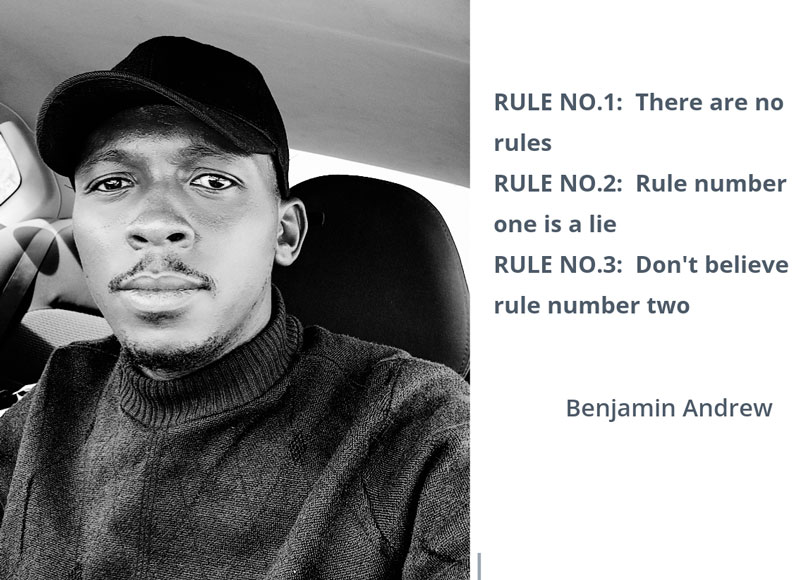

GitHub skills: Safeguard your soft properties and be a part of global changer
The modern world is dominated by people with potential contribution in a community, this is to say that, there are few individual will contribute and many will benefit from their contribution, being a part of beneficiaries in a sense of learning new knowledge is not a bad thing, but being among ignorant individuals is indeed a serious problem. In millennium era, learning is an inevitable task. As long the knowledge is available in our hand though modern tech.

Soft skills.
Talking of soft skills, remind me of my past few years when i was total unaware of online contents and some staffs like Google, i am saying this intentionally because it was so hard for me to search for solutions to my disturbing questions on Google or other online platforms. This held me to remain with what i learned from books or at school only, i was in the mid of tech solutions but not benefiting from it at all. By saying i was only relying on books i don’t mean one should not rely on books, but what i am trying to encourage is that, there millions of relevant online free source solutions, that may get you out of your dark vision and become enlightened.
Soft skills basically means additional knowledge you acquire through different methods including online open source, always soft skills are more relevant for solutions to the current community challenges, also keep you up to date with rapid change of the modern tech. Therefor there no excuses for self knowledge at individual level, as long as there enough contributors with readiness to held you from your angle of interest.
Having share my personal experience, today i want to share with you one of the ways to store your soft properties online, i write this because many of us have many ideas as well as soft properties on our computers, but don’t know where to store them safely and they get lost we stand looser with no backup means. Today’s lesson can help you to safe store your writings ideas and findings.
About GitHub.
GitHub is one of the few leading and trusted online repository (storage), github will surprise you with its offer, apart from storing your soft properties, also it has an option to create URL address for any of your file with .HTML extension and make it accessible as web link. This will provide a room for you to share knowledge with others. So here i will share with you steps to follow to create a GitHub repository and procedures to push your soft properties from your computer to your GitHub repository.
GitHub repository help to keep your soft properties safe even in an event your computer get lost or damage beyond repair, so as a contributor in a society, you need to have a backup means, although it’s better to have some other means to safeguard your soft properties, but having them online is the best recommend way. So let’s start with how to create a GitHub account.
Procedures to create/sign up to GitHub.
On browser, download GitBash, then follow onscreen instructions to install.
On browser, Create a GitHub account by following onscreen instructions.
After creating a GitHub account, on the top right angle of your screen, click a button (NEW) to create New repository.
New window will popup an instruction to fill a repository name, always remember name(s) are very essential when it comes to public content, so you have to create a suitable and informative username depend on your area of interest.
Then after you have done with filling all steps, by click the button create repository, your repository is made.
Procedures to push properties to GitHub repository.
Before proceeding to steps to push your properties to GitHub Firstly make sure folders are well arranged on your local repository (Computer). This means you need to ensure all the necessary folders you plan to push them to GitHub are in the same folder. Also avoid putting space in your folder’s name(s), this is due to fact that programming doesn’t cop well with spaces.
You can arrange folders in your computer in (My_computer/local disc e/github_files/specific folder.). This will help you find your folder easier on GitBash. For example in my local directory my properties are in local disc e/my_properties/teneson ), therefor my first and second command lines on GitBash shall begin with <cd e:, then cd/my_properties/teneson>,
Command lines at first commit.
Here below, the first and second lines here under, are examples due to my folders arrangement in my computer, so you as well shall write depending on the folder arrangement on your computer. But from line 3 to 7, shall be written as they are, only during the first commit to GitHub. Line 5, within a quotation marks, you are advised to write a comment message concerning your properties.
Open the GitBash then write the following command lines.
- cd e:
- cd e/my_properties/teneson
- git init
- git add .
- git commit -m “comment”
- git remote add origin
- git push -u origin main
Command lines at second+ commit.
The first and second lines here under, are examples due to my folders arrangement in my computer, so you should not refer to them exactly as they are, instead you shall write depending on the folder arrangement on your computer. But from line 3 to 5, should be written as they are, only during the first commit to GitHub. Line 4, within a quotation marks, you are advised to write a comment message concerning your properties.
Open the GitBash then write the following command lines.
- cd e:
- cd e/my_properties/teneson
- git add .
- git commit -m “comment on changes you have made”
- git push

Related Posts: